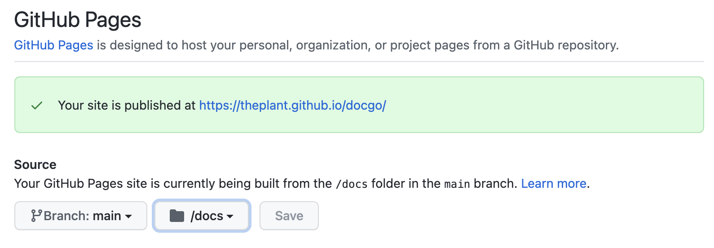

Github Pages Integration
Github Pages Setting
By default ./dev.sh will automatically run go run ./build/main.go which will generate static html pages along with js and css, assets files into a directory docs in your repo's root directory.
This way you can go to Github Settings -> Pages to turn on the settings like this:

And commit the docs directory into your main branch to publish your doc to github.